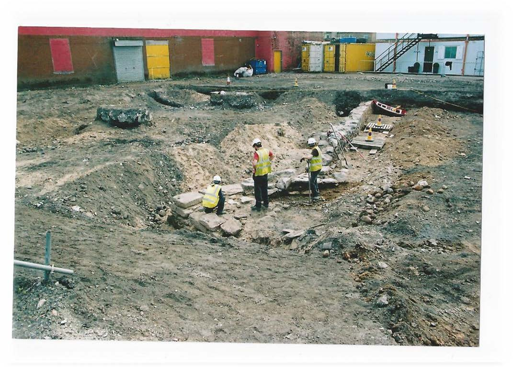
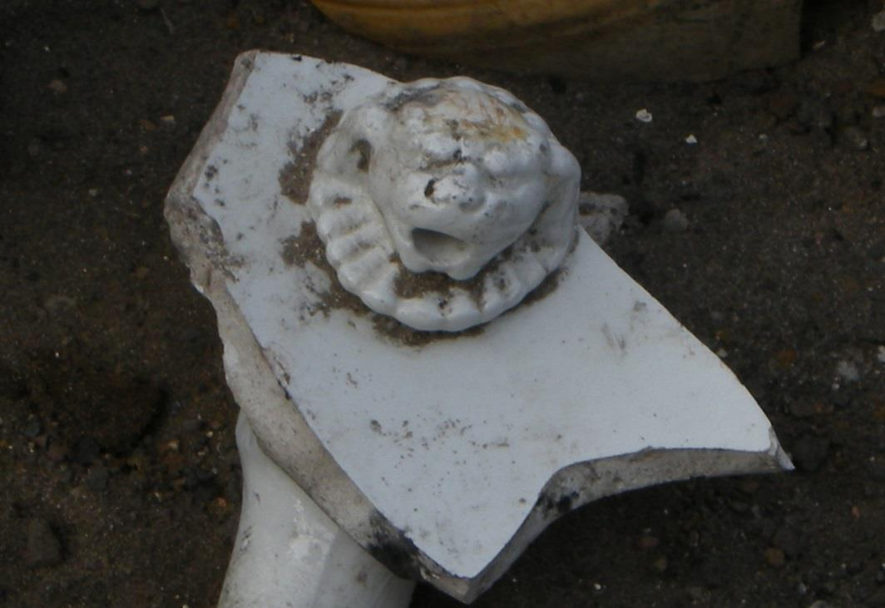
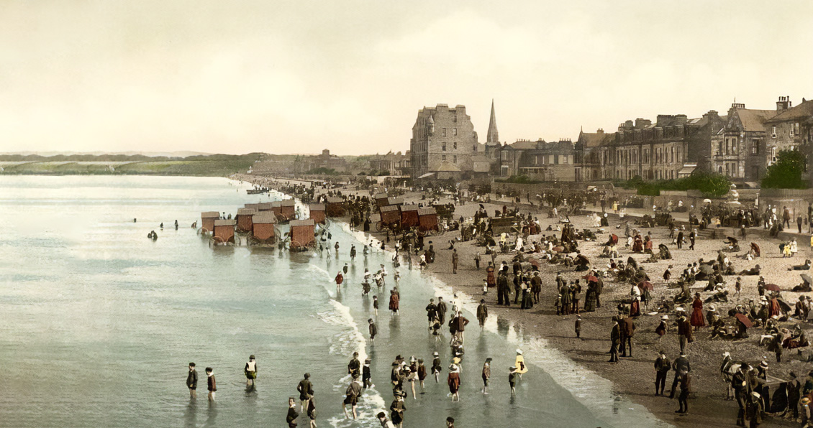
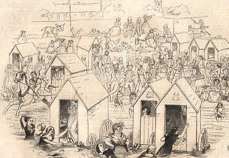
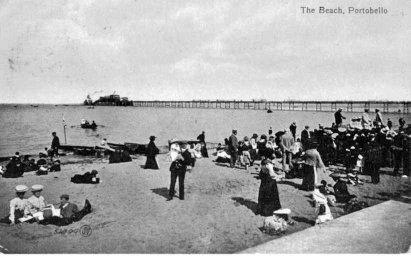

Portobello Heritage - Architecture
Portobello Harbour
Harbour Walls

The archaeological dig to excavate the harbour walls beneath the former fairground site on the promenade proved a popular attraction. Martin Cook, AOC Archaeology Group, said that hundreds of people walking past had watched the daily progress of the dig and the emergence of the exposed walls through the fence.The archaeological works were commissioned by MNM Developments Ltd as part of the residential development of the site. The exposed walls outlined the area of the harbour and the finds of stoneware and creamware provided evidence of what was produced at the potteries in the area. It is believed that approximately another two metres of wall still lie under the ground, but the archaeologists were unable to dig deeper because they had reached the water table. The results of the excavation have been recorded to provide a permanent record of the dig.

In his Annals of Duddingston and Portobello, William Baird writes ‘To meet the requirements of the growing trade of the place, and with an enterprise truly commendable, betokening his entire confidence in its ultimate success, Mr Jameson, about the year 1787-88, projected the erection of a harbour at the mouth of the Figgate Burn. The import of coals and whiteware clay from Cornwall for the potteries, and other commodities, was now considerable, while the export of bricks, tiles, etc., was also increasing, so that the prospects of a harbour being needful and likely to pay the outlay necessary for its completion was not unreasonable. Hitherto sloops, brigs, and other small craft, bringing or taking away goods, had to be beached in order to receive or discharge their cargoes, which on an unprotected shore was not always possible or safe …

The contractor employed by him was Mr Alexander Robertson, the lessee of Joppa Quarry, who undertook to cart to the harbour a thousand loads of boulder stones, in addition to the large squared stones necessary for facing the pier and harbour walls … The pier, with a rough kind of breakwater in front of it, on the north side of the harbour, was carried out in a northerly direction, directly from the foot of Pipe Street. The entrance to the harbour was narrow and the basin small, and certainly it would not accommodate more than three or four small vessels at a time. On the east was the “harbour green” which did duty as a dock-yard. On the west side the sea wall took a turn from facing the north inwards toward the burn, and was built in a substantial manner; but years of neglect, and repeated inroads of the sea, soon told upon the work.’Sections of the walls will be covered again by an underground car park, which will preserve them, and it is hoped that some of the stonework that has to be removed will be incorporated into the landscaping round the development. Even if we cannot see the walls, we now have evidence of their existence and where they lie, which is surely a positive outcome for the history of our community.
Margaret Munro.
The pillars and original portico of Shrub Mount can still be seen in the passageway that separates it from the adjoining building, and entered by the blue door shown in the previous photographPortobello's Georgian buildings are not grand; they were not intended to be, but they are to a very large degree, well designed and elegantly detailed. They also reflect the original reasons for their building and an awareness of these reasons adds to our appreciation of the architectural qualities of the buildings themselves.
Harbour Information Poster
Portobello Beach
Portobello Beach
The one-mile stretch of fine, level sand that stretches from the Figgate Burn to the rocks at Joppa has always had an important role to play in Portobello’s historical heritage. In fact, it has played many roles as we will see.Actually, the sands that became known as Portobello Beach featured in Scotland’s history before the village came into being. It was here in 1745 that Bonnie Prince Charlie reviewed his Highland Jacobite army after it had routed Sir John Cope’s Government troops at the Battle of Prestonpans and before it returned to its camp at Duddingston.
Nothing would have been further from the mind of the Young Pretender in the exhilaration following such a victory than the thought that less than a century later a Hanoverian monarch would still be on the throne and be reviewing another generation of Highlanders parading at the same location. This happened during King George IV’s visit to Scotland in August 1822 at a grand military occasion organised by Sir Walter Scott who knew Portobello and its beach well having trained there regularly as a member of the Edinburgh Light Horse during the Napoleonic Wars. What was described as the “grandest military spectacle ever before witnessed in Scotland in modern times” was principally to have been a review of the Lowland Volunteer Yeomanry Cavalry but there was also a very large contingent of Highland clans led by their chiefs. George IV asked that they should march past where he was standing after he had reviewed the cavalry. It was estimated that over 50,000 persons, led by the Scottish nobility and persons of rank, attended the event in Portobello and in the evening the village was brilliantly illuminated.The spectacle of horses exercising and drilling on the beach was a common one all during the 19th and first half of the 20th century. The Dragoons, Lancers and Hussars billeted at nearby Piershill Barracks were regular visitors and many of the rising population were members of the prosperous Edinburgh professional classes and retired army or naval officers who used the sands for recreational riding.

The print above shows a pleasant, peaceful scene on the beach around 1850, just the type of picture the promoters of Portobello as a fashionable watering place with the finest and safest bathing beach in Scotland wanted the world to see. By contrast the cartoonist’s depiction below of ladies bathing at Portobello is a lot more animated with an almost chaotic atmosphere but does show how popular sea bathing was. It also has a sense of fun that is more in keeping with the way in which Portobello was to develop as a holiday destination for the working classes in the second half of the 19th century.

It was the advent of cheap travel with the growth of railways and employees getting annual holiday breaks that made Portobello Scotland’s foremost holiday resort and its main attraction was undoubtedly the beach. The income for the town generated by the thousands who flocked to it year after year was considerable. Shopkeepers, hotel, guesthouse and lodgings proprietors, caterers and providers of entertainments prospered and the wider community benefited.
People, even children, did not take their clothes off when they went to the beach in Edwardian times. Indeed, they tended to dress up. At this time too, deckchairs had still to make an appearance so folk either just stood around or sat on the sand.Concert party entertainers were popular as was taking out a rowing boat.

People, even children, did not take their clothes off when they went to the beach in Edwardian times. Indeed, they tended to dress up. At this time too, deckchairs had still to make an appearance so folk either just stood around or sat on the sand.Concert party entertainers were popular as was taking out a rowing boat.
Portobello Beach in 1954
Visitor numbers declined rapidly in the second half of the 20th century with the rise of cheap package holidays to overseas resorts that gave a greater guarantee of sunshine. Nevertheless, the beach still attracts local residents and day visitors in more than reasonable numbers on fine sunny days. The beach is still a tremendous community asset and, as it has become less patronised by visitors during the summer, has been used by residents for an increasing variety of purposes. One could say that local ownership has been asserted.Big Things on the Beach is a local public arts trust set up in 2003 with the aim of promoting Portobello Beach as a site for the creation and presentation of cutting edge, contemporary public art and its commissioned temporary artworks, while sometimes controversial locally, have generated national publicity for Portobello. Portobello Open Door, POD for short, is an organisation dedicated to promoting and developing culture and arts in Portobello by involving the talents and interests of local people, and regularly uses the beach and its surrounds for its events. The by now annual Big Beach Busk, more informally put together by one or two enthusiastic individuals, attracts instrumentalists of all ages and genres to create a mile of musical entertainment along the shore line.Portobello Sailing and Kayaking ClubThe revival of open water rowing, using community owned boats, and the formation of a yachting and kayaking club have proved extremely welcome developments. Regattas attract competitors and visitors from around the Scottish coast. Volleyball competitions and other sporting activities take place regularly on the beach and joggers and walkers can be seen at all times of the year.
Photo gallery